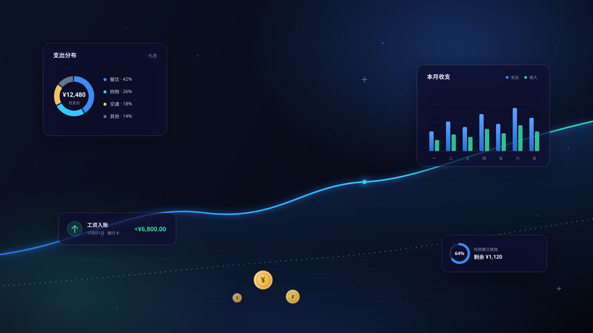
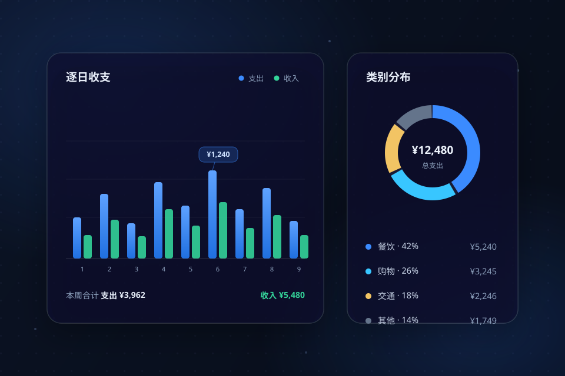
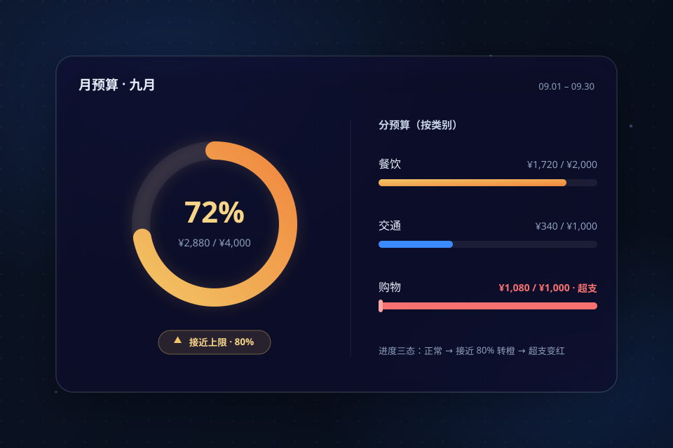
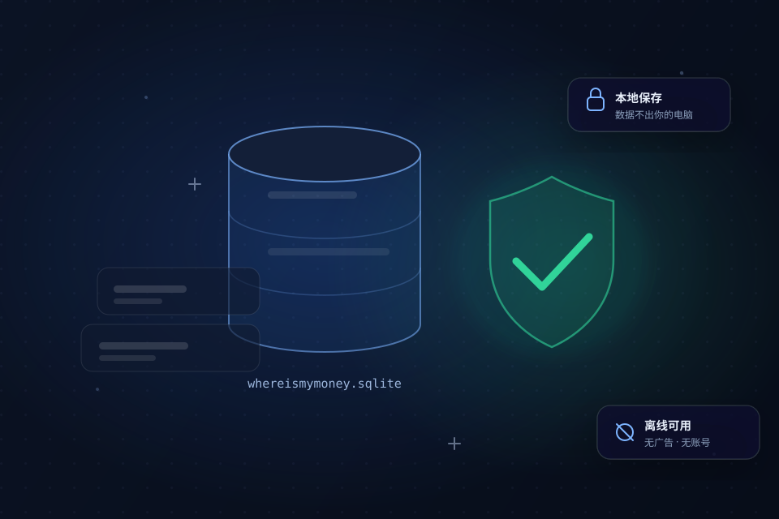

日历记账
点哪天，记哪天。左侧月历直达任意日期，今天高亮、一键回到今天；账目名称、金额、类别、付款方式一次填完，几秒钟记好一笔账。

v0.2.0 正式版 · Windows 桌面应用
WhereIsMyMoney 是一款为 Windows 精心打造的桌面记账应用：日历式记账、可视化统计、 周 / 月预算与分预算——你的每一笔收支，都清清楚楚。
免费开源 · 无广告 · 无需联网 · 离线安装包开箱即用
Features · 核心功能
从记下第一笔，到看懂每一个月——WhereIsMyMoney 把复杂都留在背后。
点哪天，记哪天。左侧月历直达任意日期，今天高亮、一键回到今天；账目名称、金额、类别、付款方式一次填完，几秒钟记好一笔账。

周 / 月 / 自定义区间统计，支持类型、类别、付款方式与关键词多维筛选；逐日收支柱状图、类别与付款方式分布，钱的方向一眼看懂。

周预算 / 月预算，还能按类别拆成分预算分别跟踪。进度三态提醒——正常、接近 80% 转橙、超支变红；历史预算随时回看。

数据保存在你自己的电脑里（SQLite），不联网、不上传、无广告；金额以整数"分"存储，杜绝浮点误差，账本永远精确。
Why WhereIsMyMoney
不注册、不登录、不联网——打开就能用，数据永远在你手里。
官方离线安装包，装好即用；没有账号体系，也没有强制联网环节。
金额以整数"分"存储，统计汇总永不出现 0.1 + 0.2 = 0.30000000004。
Windows 10 原生 Fluent 风格，深色 / 浅色一键切换、自动记忆，深夜记账不刺眼。
MIT 协议完整开源，Qt Quick + SQLite，代码就在 GitHub，想看就看。